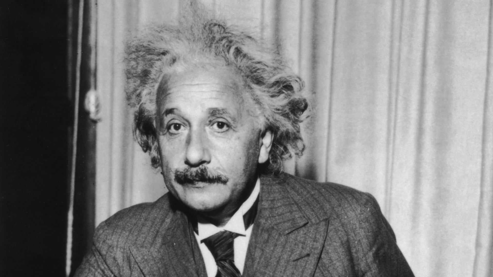

Albert Einstein was a German-born theoretical physicist who developed the theory of relativity, one of the two pillars of modern physics alongside quantum mechanics. His work is also known for its influence on the philosophy of science. Einstein is best known to the general public for his mass–energy equivalence formula E = mc^2, which has been dubbed "the world's most famous equation".
Albert Einstein was born on March 14, 1879, in Ulm, in the Kingdom of Württemberg in the German Empire. He was awarded the 1921 Nobel Prize in Physics "for his services to theoretical physics, and especially for his discovery of the law of the photoelectric effect".
Einstein published more than 300 scientific papers and over 150 non-scientific works. He died on April 18, 1955, in Princeton, New Jersey, USA.
"Imagination is more important than knowledge. For knowledge is limited, whereas imagination embraces the entire world, stimulating progress, giving birth to evolution."
"The only source of knowledge is experience."